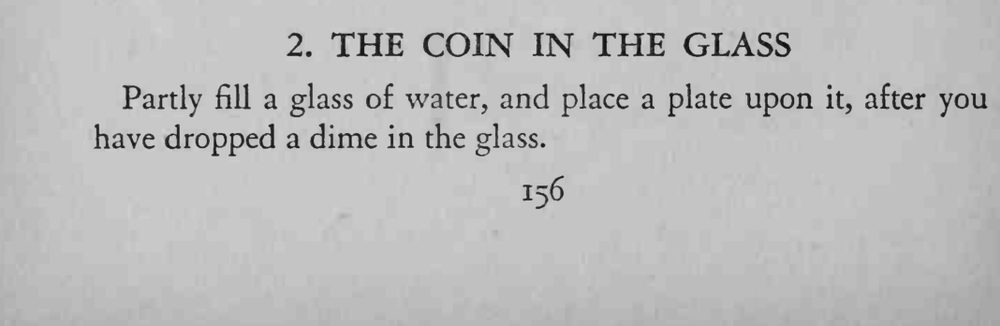
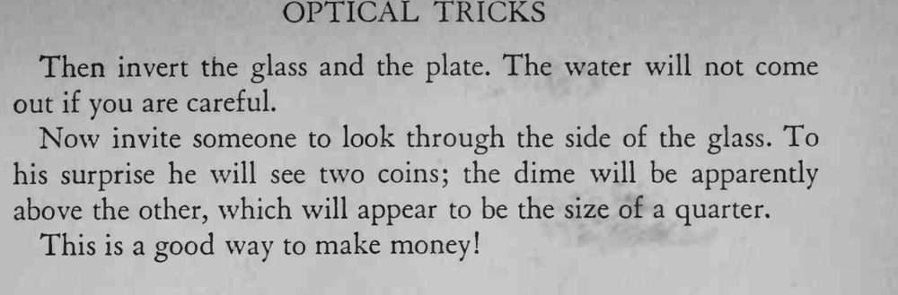

杯里丢一枚硬币、倒水盖盘再倒扣，从侧面看竟出现两枚硬币，其中一枚显得大如两角五分。
水别装太满，盘子要压紧，倒扣时动作要慢。


Partly fill a glass of water, and place a plate upon it, after you have dropped a dime in the glass. Then invert the glass and the plate. The water will not come out if you are careful. Now invite someone to look through the side of the glass. To his surprise he will see two coins; the dime will be apparendy above the other, which will appear to be the size of a quarter. This is a good way to make money!